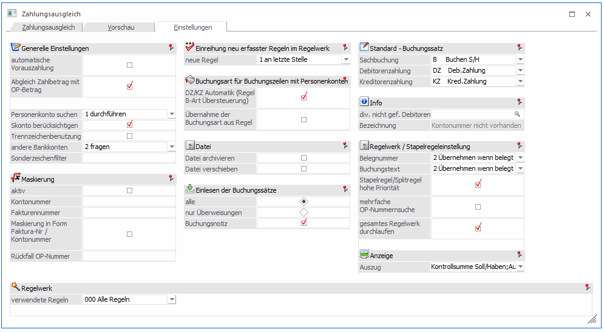
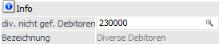

Alle generellen Einstellungen, welche für den Zahlungsausgleich gelten sollen, werden in dem Register Einstellungen vorgenommen. Die Einträge in der MESONIC.INI unter [ZAGL] haben somit keine Auswirkung mehr.

Generelle Einstellungen
Ø Automatische Vorauszahlung
Findet eine Überzahlung eines OPs statt, d.h. in der Bankdatei existiert ein höherer Betrag als der OP-Betrag, dann wird der OP zum Ausgleich und eine Vorauszahlung über den Restbetrag im ZAGL-Buchungsstapel vorgeschlagen, wenn diese Checkbox aktiviert ist.
Ø Abgleich Zahlbetrag mit OP-Betrag
Bei aktivierter Checkbox wird der Zahlbetrag mit dem OP-Betrag des Personenkontos abgeglichen.
Wenn ein Personenkonto automatisch aufgrund der Bankverbindung bzw. durch eine Regel erkannt wird und keine Faktura mittels einer Regel maskiert wird, dann wird der Betrag aus der Bankdatei mit den OP-Beträgen dieses Personenkontos verglichen. Stimmen beide Beträge überein, dann wird die Fakturennummer als Belegnummer vorgeschlagen. Skonto wird je nach Einstellung der Option "Skonto berücksichtigen" berücksichtigt. Der OP-Betrag darf nur einmalig beim Personenkonto existieren.
Ø Personenkonto suchen
Für die Personenkontensuche stehen folgende Möglichkeiten zur Auswahl:
ü 0 nicht durchführen
Es wird
keine Personenkontensuche durchgeführt.
ü 1 durchführen
Personenkonten
werden aufgrund der Bankverbindung gesucht. Wird die Bankverbindung aus der
Bankdatei einmalig in einem Personenkonto gefunden, wird dieses Personenkonto
als Gegenkonto in der ZAGL-Vorschau vorgeschlagen.
ü 2 nur Bankverbindung
überprüfen
Bei dieser Option wird das Personenkonto nur geladen wenn die
Bankverbindung überprüft werden muss/kann.
ü 3 nur Kontonummer
überprüfen
Das Personenkonto wird nur zur Kontrolle der Kontonummer
geladen.
ü 4 nur Kontoname überprüfen
Im
Personenkontenstamm wird nur nach dem Kontonamen gesucht sofern eine
entsprechende Regel bzw. entsprechende Daten vorhanden sind.
Hinweis
Wird zusätzlich die Checkbox "DZ/KZ Automatik (Regel B-Art Übersteuerung)" aktiviert, dann wird die Buchungsart DZ (bei einem positiven Betrag in der Bankdatei) und KZ (bei einem negativen Betrag in der Bankdatei) in der ZAGL-Vorschau eingetragen.
Ø Skonto berücksichtigen
Im Zahlungsausgleich wird erkannt, wenn Zahlungen innerhalb der Skontofrist und Toleranzen eingelesen werden. Es wird dann automatisch der Skontobetrag ermittelt und entsprechend berücksichtigt, wenn diese Checkbox aktiviert ist.
Ist die Checkbox nicht aktiviert, wird die Skontoberechnung im Zahlungsausgleich generell unterbunden. Es wird nicht mehr automatisch der Skontobetrag ermittelt und berücksichtigt.
In älteren Versionen gab es für diese Funktion den MESONIC.INI - Eintrag
[ZAGL]
KeinSkonto=1
welcher ab der aktuellen Version keine Auswirkung mehr hat.
Ø Trennzeichenbenutzung
Bei aktivierter Checkbox wird mit der Trennzeichenbenutzung gearbeitet.
In der Konten- und Fakturenmaskierung werden Konto- und Fakturennummern als abgeschlossen erkannt, wenn nach der Nummer ein Trennzeichen wie Leertaste, ; in der Bankdatei existiert. Dazu ist es notwendig, dass eine größere Stellenanzahl bei der Maskierung angegeben wird. So können z.B. 7-stellige und 9-stellige Fakturennummern mit einer Regel gefunden werden.
In älteren Versionen gab es für diese Funktion den MESONIC.INI - Eintrag
[ZAGL]
UseTrennzeichen=0
welcher ab der aktuellen Version keine Auswirkung mehr hat.
Ø andere Bankkonten
Im Zahlungsausgleich können auch MT940-Dateien eingelesen werden, die Zahlungen aus 2 oder mehreren verschiedenen Banken beinhalten. In der WinLine muss daher entschieden werden, was mit den Daten geschehen soll, wobei es mehrere Möglichkeiten gibt:
ü 0 immer ignorieren
In diesem
Fall werden die Daten der weiteren Banken ignoriert und es werden nur die
Buchungen, die zu der zuvor ausgewählten Hausbank gehören, eingelesen und
gebucht. D.h. die Daten für das andere Bankkonto müssten extra nochmals
eingelesen werden.
ü 1 anzeigen
In dem Fall werden
alle Daten eingelesen und gebucht, auch die Daten der anderen Banken. Es werden
dann alle Buchungen auf die Kontonummer der zuvor ausgewählten Hausbank
gebucht.
ü 2 fragen
In dem Fall wird bei
der Übernahme, bevor der Buchungsstapel abgestellt wird, gefragt, welche Option
ausgeführt werden soll.
Ø Sonderzeichenfilter
Über den Sonderzeichenfilter können Zeichen wie z.B. @ ~ aus der Datei gefiltert werden, die ohnehin nicht im Datenstand (z.B. im Personenkontonamen etc.) vorkommen - von der Bank jedoch angeliefert werden. Die Zeichen werden dann während dem Einlesen der Datei herausgefiltert und müssen bei den Regeln nicht mehr gesondert berücksichtigt werden.
Maskierung
Ø aktiv/inaktiv
Ist die Maskierung auf aktiv gesetzt, wird für alle Zeilen, denen kein Regelwerk zugeordnet werden konnte, die hinterlegte Maskierung herangezogen.
Da der Verwendungszweck am Zahlschein nicht mehr als max. 12 Stellen umfassen darf (lt. Bankformat-Vorschriften) kann es sein, dass Ihre Kontonummern und Fakturennummern für die Ausgabe und das Einlesen mutiert werden müssen.
Beispiel 1
Sie verwenden in der FIBU 7stellige Debitorennummern und 7stellige Fakturennummern = in Summe 14stellig. Da aber alle Debitorennummern mit 23 (oder in Deutschland mit 14) beginnen, könnte man die ersten beiden Stellen beim Berechnen des Verwendungszweckes (zum Zeitpunkt des Fakturendrucks, mit dem auch der Zahlschein erzeugt wird) vernachlässigen und beim Einlesen der Datensätze automatisch vorbelegen. Damit findet man wieder mit 12 Stellen das Auslangen.
Ø Kontonummer
#######: Angabe der Länge der Kontonummer sowie gegebenenfalls Überlagerungen der Standard-Nummer.
Beispiel 2
Maske Konto-Nr. 23####
Konto-Nr. in Datei: 4567
Konto-Nr. in FIBU: 234567
Ø Fakturennummer
#######: Angabe der Länge der Fakturennummer sowie gegebenenfalls Überlagerungen der Standard-Nummer.
Beispiel 3
Maske FA-Nr. ####-FA
Fakturen-Nr. Datei: 1234
Fakturen-Nr. FIBU: 1234-FA
Ø Maskierung in der Form Faktura-Nr / Kontonummer
Bei aktivierter Checkbox werden die ersten 12 Stellen der Maskierung anstelle von Kontonummer/Belegnummer als Belegnummer/Kontonummer interpretiert.
Ø Rückfall OP-Nummer
Falls im ZAGL-Lauf Fakturen auf Grund ihrer Inhalte nicht zugewiesen werden können, wird hier eine Rückfall OP-Nummer vergeben.
Einreihung neu erfasster Regeln im Regelwerk
Ø Neue Regel
ü 0 an oberste Stelle
Wird dieser
Radiobutton aktiviert, werden die in der ZAGL-Vorschau über den Regelassistenten
neu erfassten Regeln an oberster Stelle der mandantenübergreifenden bzw.
mandantenspezifischen Regeln im Regelwerk eingefügt.
ü 1 an letzte Stelle
Wird dieser
Radiobutton aktiviert, werden die in der ZAGL-Vorschau über den Regelassistenten
neu erfassten Regeln an letzter Stelle der mandantenübergreifenden bzw.
mandantenspezifischen Regeln im Regelwerk eingefügt.
Buchungsart für Buchungszeilen mit Personenkonten
Ø DZ/KZ Automatik (Regel B-Art Übersteuerung)
Wird die Checkbox aktiviert, dann wird die Buchungsart DZ (bei einem positiven Betrag in der Bankdatei) und KZ (bei einem negativen Betrag in der Bankdatei) in der ZAGL-Vorschau eingetragen, wenn auch ein Personenkonto für diese Buchungszeile gefunden oder maskiert wird.
Diese Checkbox kann nur aktiviert werden, wenn auch die Checkbox "Personenkonto suchen" aktiviert ist.
Ø Übernahme der Buchungsart aus Regel
Bei aktivierter Checkbox wird immer die Buchungsart aus der Regel herangezogen, unabhängig davon ob ein Personenkonto oder ein Sachkonto als Gegenkonto maskiert ist.
So kann auch die Buchungsart B für Personenkonten in der ZAGL-Vorschau vorgeschlagen werden, wenn die Buchungsart B in der Regel hinterlegt ist.
Datei
Ø Datei archivieren
Ist diese Checkbox aktiv, wird beim Erzeugen der Buchungssätze die entsprechende Übernahme-Datei archiviert.
Ø Datei verschieben
Ist diese Option aktiv, wird nach dem ZAGL-Lauf die Datei verschoben. Dazu müssen allerdings im Absenderstamm und/ oder im Bankenstamm die betreffenden ZAGL-Verzeichnisse sinnvoll befüllt sein. War der ZAGL-Lauf erfolgreich, dann wird die Datei entweder in das Bank-Ablageverzeichnis oder - sofern dieses nicht befüllt wurde - in das Absenderstamm-Ablageverzeichnis verschoben. Hat es ein Problem beim ZAGL-Lauf mit der entsprechenden Datei gegeben, wird die Datei in das dafür vorgesehene Fehlerverzeichnis verschoben. Wenn z.B. die BLZ oder Kontonummer der Bank in der Übernahmedatei nicht mit den Daten im Bankenstamm übereinstimmt, wird die Übernahmedatei in das Fehlerverzeichnis verschoben und es wird kein ZAGL-Buchungsstapel erstellt.
Einlesen der Buchungssätze
Hier kann definiert werden, welche Art von Daten eingelesen werden sollen und in den ZAGL-Buchungsstapel übernommen werden sollen.
Ø alle
Damit können alle Buchungszeilen (egal ob in Groß- oder Kleinbuchstaben) eines Kontoauszuges eingelesen werden. Durch Anwahl des Buttons "Regelwerk" können Buchungsregeln hinterlegt werden, womit bestimmt werden kann, welche Daten auf welches Konto gebucht werden soll, d.h. anhand der Textierung kann vom System durch Fuzzy-Logic erkannt werden, welche Kontierung verwendet werden soll (z.B. kommt im Text das Wort "VISA" vor, soll das Schwebekonto "Zahlungen mit VISA" als Gegenkonto herangezogen werden, etc.).
Ø nur Überweisungen
Damit werden nur Überweisungen (Debitorenzahlungen)
eingelesen, die von der Bank zur Verfügung gestellt wurden.
Das Feld 24 in
der MT940 muss mit einem 12-stelligen, numerischen Wert gefüllt ist, damit es
als Überweisung erkannt wird und die Spalte Kundendaten/Verwendungszweck in der
ZAGL-Vorschau entsprechend gefüllt wird
Existieren in einer MT940-Datei keine "reinen Überweisungszeilen", fällt die Auswahl weg und es werden automatisch alle Buchungssätze eingelesen.
Ø Buchungsnotiz
Durch Aktivierung der Checkbox wird der "selektierte Buchungstext / Buchungsnotiz" der Buchungszeilen im ZAGL in die Buchungsnotiz des ZAGL-Buchungsstapels übernommen.
Ist die Checkbox nicht aktiviert, wird die Buchungsnotiz in den Buchungszeilen des ZAGL-Buchungsstapels nicht gefüllt.
Bei der Bearbeitung von V2-Dateien erhalten Sie anstatt des Fensterteiles "Einlesens der Buchungssätze" folgendes Eingabefeld:
Standard - Buchungssatz
Ø Sachbuchung
Auswahl der Buchungsart, die bei Sachbuchungen für den Buchungssatz verwendet werden soll.
Ø Debitorenzahlung
Auswahl der Buchungsart, die bei Debitorenzahlungen für den Buchungssatz verwendet werden soll.
Ø Kreditorenzahlung
Auswahl der Buchungsart, die bei Kreditorenzahlungen für den Buchungssatz verwendet werden soll.
Info
Ø Div. nicht gef. Debitoren
Habenkonto, das eingetragen wird, falls das Debitoren-Konto der Bankdatei nicht im Personenkontenstamm gespeichert ist.

Regelwerk / Stapelregeleinstellung
Ø Belegnummer
Diese Option steuert, wie die Belegnummer aus dem ersten Register Zahlungsausgleich in die Tabellenzeilen übernommen werden soll.
ü 0 Nicht übernehmen
Die Eingabe
im Register Zahlungsausgleich im Feld "Belegnummer" wird nicht in die
Belegnummer der ZAGL-Vorschau und des ZAGL-Buchungsstapels übernommen.
ü 1 Übernehmen
Der Inhalt des
Feldes "Belegnummer" im Register Zahlungsausgleich wird in die Belegnummer der
ZAGL-Vorschau und des ZAGL-Buchungsstapels übernommen. Ist die "Belegnummer"
leer, bleibt auch die Belegnummer der ZAGL-Vorschau und des ZAGL-Buchungsstapels
leer.
Ist die Belegnummer über eine Regel definiert worden, hat diese
Vorrang.
ü 2 Übernehmen wenn belegt
Nur
wenn in dem Feld "Belegnummer" im Register Zahlungsausgleich etwas eingetragen
ist, wird diese in die Belegnummer der ZAGL-Vorschau und des
ZAGL-Buchungsstapels übernommen.
Ist die Belegnummer über eine Regel
definiert worden, hat diese Vorrang.
ü 3 Fakturennummer als
Belegnummer
Die Fakturennummer wird als Belegnummer in die ZAGL-Vorschau und
den ZAGL-Buchungsstapel übernommen.
Ist die Belegnummer über eine Regel
definiert worden, hat diese Vorrang.
Ø Buchungstext
Diese Option steuert, wie der Buchungstext aus dem ersten Register Zahlungsausgleich in die Tabellenzeilen übernommen werden soll.
ü 0 Nicht übernehmen
Die Eingabe
im Register Zahlungsausgleich im Feld "Buchungstext" wird nicht in den
Buchungstext der ZAGL-Vorschau und des ZAGL-Buchungsstapels übernommen.
Als
Buchungstext wird der Inhalt des Verwendungszwecks (die ersten 50 Zeichen) in
den Buchungstext der ZAGL-Vorschau und des ZAGL-Buchungsstapels
übernommen.
Ist der Buchungstext über eine Regel definiert worden, hat dieser
Vorrang.
ü 1 Übernehmen
Der Inhalt des
Feldes "Buchungstext" im Register Zahlungsausgleich wird in den Buchungstext der
ZAGL-Vorschau und des ZAGL-Buchungsstapels übernommen. Ist der "Buchungstext"
leer, bleibt auch der Buchungstext der ZAGL-Vorschau und des
ZAGL-Buchungsstapels leer.
Ist der Buchungstext über eine Regel definiert
worden, hat dieser Vorrang.
ü 2 Übernehmen wenn belegt
Nur
wenn in dem Feld "Buchungstext" im Register Zahlungsausgleich etwas eingetragen
ist, wird dieser Text in den Buchungstext der ZAGL-Vorschau und des
ZAGL-Buchungsstapels übernommen. Ist der "Buchungstext" leer, wird der Inhalt
des Verwendungszwecks (die ersten 50 Zeichen) in den Buchungstext der
ZAGL-Vorschau und des ZAGL-Buchungsstapels übernommen.
Ist der Buchungstext
über eine Regel definiert worden, hat dieser Vorrang.
Ø Stapelregel/Splitregel hohe Priorität
Ist die Option aktiv, werden zuerst die Stapelregeln und Splitregeln aus dem Regelwerk abgearbeitet.
Ist diese Option nicht aktiv, haben die Regeln vom Typ 1. Soll, 2. Haben und 3. Kundendaten höchste Priorität. Erst danach kommen die Stapel- bzw. Splitregeln.
Ø Mehrfache OPNummernsuche
Wird in den Stapelregeln eine OP-Nummer gefunden entscheidet diese Checkbox, ob danach noch nach weiteren OP-Nummern gesucht werden soll. Dabei wird die Fakturennummer-Maskierung mehrfach hintereinander durchgeführt.
Ø Gesamtes Regelwerk durchlaufen
Bei den Regeln 1. Soll, 2. Haben bzw. 3. Kundendaten wird nach der Regelanwendung keine weitere Regel mehr durchgeführt. Mit dieser gesetzten Option ist eine Kombination aus z.B. einer Haben-Regel und einer Stapelregel möglich. Die Haben-Regel findet aufgrund eines Namens das Gegenkonto, die Stapelregel findet mit ihren Möglichkeiten die OP-Nummer.
Anzeige
Ø Auszug
Über diese Einstellung wird gesteuert, welche Zeilen in der Vorschau zu sehen sind.
ü Kontrollsumme Soll/Haben
ü Auszug Anfangstand
ü Auszug Endstand
ü Bevorstehende Buchungen
Buttons
Ø Ende
Mit dem Ende-Button wird der Zahlungsausgleich abgebrochen.
Ø Einstellungen speichern
Mit dem Einstellungen speichern - Button werden die Einstellungen benutzerspezifisch gespeichert.